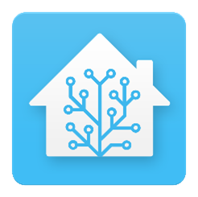
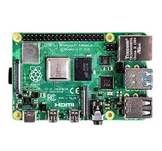
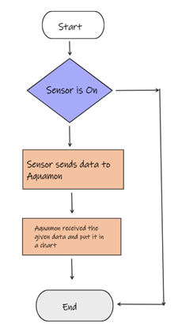
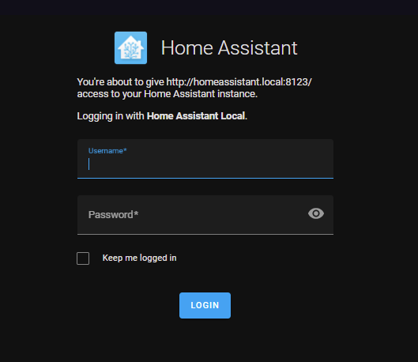
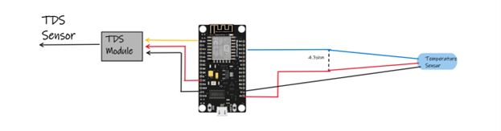
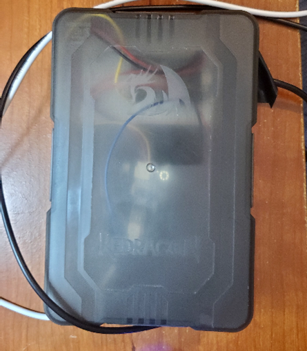
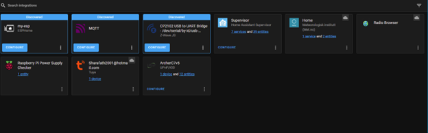
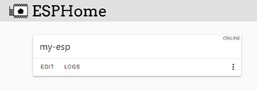
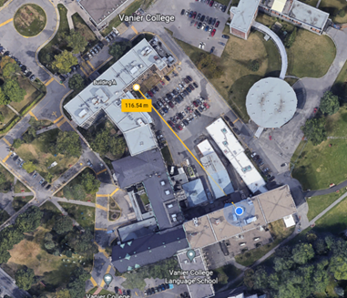

Aquarium IOT
The Aquarium IOT project utilizes the latest in IoT technology to provide real-time monitoring and control of an aquarium's vital parameters, such as temperature and pH levels. By integrating sensors and automation devices with an open-source home assistant platform, users can ensure optimal conditions for their aquatic inhabitants while also gaining valuable insights into the health and well-being of their ecosystem. The project is designed to be user-friendly and easy to set up, empowering users to take control of their home automation needs and ensuring the longevity and vitality of their aquarium.
HOME-ASISTANT

With the Home Assistant, you can easily program and connect various devices to automate your home. This open-source platform prioritizes local control and privacy, ensuring that your personal data remains safe. TheHome Assistant community is made up of passionate tinkerers and DIY enthusiasts from all over the world, making it a reliable and constantly evolving platform. Whether you're running it on a Raspberry Pi or a local server, the Home Assistant is the perfect solution for anyone looking to take their home automation to the next level.
Raspberry Pi

The Raspberry PI is capable little device that enables people of all ages to explore computing, and to learn how to program in languages like Scratch and Python. It’s capable of doing everything you’d expect a desktop computer to do, from browsing the internet and playing high-definition video, to making spreadsheets, word-processing, playing games .
How does it work ?

One of the key features of the Home Assistant is its ability to monitor and collect data from various sensors. When the sensor is turned off, the data is sent to the Home Assistant server, where it is processed and displayed in an easy-to-read chart format. This allows users to easily monitor and analyze the data on a daily basis, providing valuable insights and enabling proactive action to be taken if necessary.
In the case of an aquarium, the Home Assistant system can play a crucial role in maintaining the health and well-being of the aquatic inhabitants. By providing real-time monitoring and analysis of water temperature, pH levels, and other parameters, it can alert users to potential issues and help prevent costly mistakes. Ultimately, the Home Assistant empowers users to take control of their home automation needs and ensures that their aquarium is running at optimal conditions..
Materials
- Raspberry Pi 4
- Esp8266
- Jumper wires
- Dallas temperature sensors
- Tds sensor
- Cover is a redragon box
How do you start ?
This comprehensive guide will walk you through the process of downloading the Home-Assistant image to your Raspberry Pi, step-by-step. Once completed, you will be presented with a user-friendly interface that will allow you to easily program and connect various devices for home automation. This guide ensures that even beginners can successfully set up their Home-Assistant on their Raspberry Pi, making home automation simple and accessible to everyone.
Then You will be presented with this Page

Sign up for an account to access features and resources.
Make the esp connection to the sensors.

Once you are set with the Hardware, you can make the enclosure. I did it like this, but if you want you can 3d module and make it better.

The Home Assistant platform is designed with user-friendliness in mind, making it easy for anyone to set up and use. We will be utilizing a powerful integration called ESPHOME.
What's Integration for Home Assistant?
Home Assistant Core can be extended with integrations. Each integration is responsible for a specific domain within Home Assistant. Integrations can listen for or trigger events, offer services, and maintain states.

What's ESPHOME?
ESPHome (previously known as esphomelib) is a Nabu Casa-owned tool with which you can create custom firmware for readily available and cheap ESP8266 and ESP32 boards. Custom firmware on its own might sound complicated, but ESPHome makes its creation easy.

The Code can get from this link
Functionality
Ensure that your ESPHome device and Raspberry Pi are connected to the same Wi-Fi network, as this is a crucial step for proper functionality.
To ensure proper functionality, it is important to note that the ESPHOME device and the Raspberry Pi must be connected to the same wireless network. In certain cases, such as in a school setting, the provided network may require a unique username in addition to the standard SSID and password. To work around this, a separate router can be utilized to create a distinct wireless network for the ESPHOME device to connect to. This can be done by connecting the router to the existing network via an ethernet cable and configuring the new network with a unique name and password. Once this is done, the ESPHOME device can be connected to the newly created network, allowing for seamless communication with the Raspberry Pi.
To ensure optimal performance, it is important to perform range tests with the ESP8266 and the router. By testing the connection at various distances and with different levels of interference, such as walls, we were able to determine the maximum range of connectivity. With minimal interference, we were able to achieve a range of up to 116 meters, which was quite satisfactory. However, it is important to note that walls and other forms of interference can greatly reduce the connectivity range, so it is important to take them into consideration when setting up the system.

Interesting Fact
Once you have successfully configured the Home Assistant and the Raspberry Pi, you'll find that it is incredibly easy to use. Utilizing the ESPHOME integration, the process of connecting your ESP8266 device to the network is seamless and effortless.
Additionally, the range capabilities of this setup are impressive, with the ability to connect up to 116 meters with zero interference. This makes it possible to have multiple ESP devices working simultaneously, providing real-time monitoring and analysis of your home automation system. It's a truly mind-blowing experience to see how quickly and easily the ESP devices connect to the network, making it simple to set up multiple sensors with just a couple of ESPs.